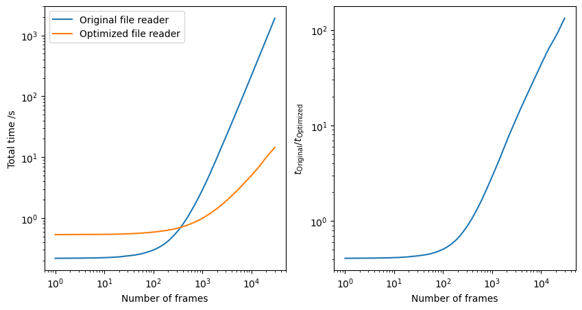
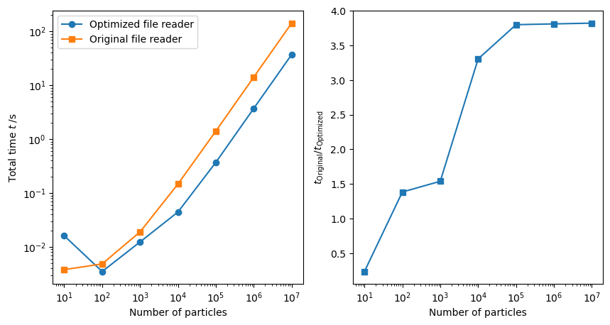

Example FR2: Optimizing the performance of Example FR1
This examples is based on Example FR1: Custom file reader loading particle properties and the simulation cell, before continuing please make sure that your are familiar with the code in that example.
In this example we will address the two performance critical issues found in that file reader:
For long trajectories, seeking to a requested frame by reading all lines preceding that frame will become slower and slower for later frames.
For simulations containing many atoms, performing many property assignments such as
type_property[i] = ...can become a bottleneck.
Seeking to the requested frame
As a first optimization we save the byte offset to the start of each frame instead of the line number. This allows the file reader to jump directly to the correct position inside the file instead of sequentially stepping through it line by line until the requested frame is found.
This requires two changes. First, the scan method needs to store byte offsets instead of line
numbers. The current byte offset (from the start of the file) of the reading head can be obtained
using the .tell() method. However, this method is deactivated in a for line in f: ...
loop. Therefore, the for loop has to be replaced by a while loop and the readline
method needs to be called manually. This leads to the following code:
def scan(self, filename: str, register_frame: Callable[..., None]):
with open(filename, "r") as f:
while line := f.readline():
if line.startswith("Timestep "):
offset = f.tell() - len(line.encode('utf-8'))
register_frame(frame_info=offset, label=line.strip())
yield
Note that the := requires at least Python 3.8 to work. Unfortunately, the .tell() method itself is
not too fast. Therefore, it is only call once a line starting a new frame, i.e., starting with
the word Timestep has been identfied. We need to shift the byte offset reported by the tell
method by the (byte) length of the current line, as this line has already been read and therefore
has advanced the file pointer. The stored by offset will point at the being of the Timestep line.
Once we have implemented the new scan method we can benchmark it against the one from
Example FR1: Custom file reader loading particle properties and the simulation cell. Quick benchmarks show that the new scan method is
about 1.5 - 2 times slower than the old one, however the speedup in the parse method
will make up for this small difference.
Secondly, the parse method needs to be updated to handle the byte offset instead of a line
number. To do so, the
# Seek to the beginning of the requested trajectory frame
starting_line_number = frame_info
for _ in range(starting_line_number):
f.readline()
loop needs to be replaced by a simple file seek instruction:
# Seek to the beginning of the requested trajectory frame
starting_byte_offset = frame_info
f.seek(starting_byte_offset)
After the initial seek all remaining code can be left unchanged.
To benchmark these code changes we measured the total time to step through a trajectory file containing 30,000 frames of ~20 atoms per frame. Here we can see that the optimized version of the file reader takes about 14 seconds to open all 30,000 frames, while the old, unoptimized version, takes about 32 minutes.
{kind=link}
Minimizing OVITO / Python data exchange
In a next step we want to optimize the the assignment of particle properties. Recall that the old
version of the file reader developed in Example FR1: Custom file reader loading particle properties and the simulation cell copies both the
positions and particle types for each particle individually from Python into OVITO memory. This
takes time and can be optimized by collecting all data in Python / numpy and copying it into OVITO
in one go.
This approach allows for an optimization of the conversion betwenn reduced
and cartesion coordiantes. While the original implementation transformed the coordinates for each
particle individually, the usage of numpy.einsum now allow for vectorization and therefore
acceleration of this calculation.
Be aware, that this optimization increases the memory requirements of the file reader.
We updated the parse method in the following way:
1def parse(self, data: DataCollection, filename: str, frame_info: int, **kwargs: Any):
2 ...
3 particle_count = int(f.readline().split()[1])
4 particles = data.create_particles(count=particle_count)
5 type_property = particles.create_property("Particle Type")
6 position_property = particles.create_property("Position")
7 f.readline()
8
9 # updated code:
10 types = numpy.empty(particle_count, dtype=numpy.int32)
11 positions = numpy.empty((particle_count, 4))
12 positions[:, 3] = 1.0
13 for i in range(particle_count):
14 tokens = f.readline().split()
15 types[i] = type_property.add_type_name(tokens[0], particles).id
16 for j in range(3):
17 positions[i, j] = float(tokens[j+1])
18 yield i/particle_count
19 type_property[...] = types
20 position_property[...] = numpy.einsum('ij,kj -> ki', cell, positions)
21 ...
First, we pre-allocate numpy arrays for both the type and the position property. Here we prepare 4 vector components for the position, as the conversion from reduced to cartesian coordiantes requires the matrix multiplication of the simulation cell matrix \(M\) and the point \(p = (x_\mathrm{r}, y_\mathrm{r}, z_\mathrm{r}, 1)\), where subscript \(r\) denotes the reduced coordiantes.
Afterwards we use a similar loop over all particles as already seen in Example FR1: Custom file reader loading particle properties and the simulation cell to extract the data from the actual file. Note, how that the data is written in the numpy arrays instead of the particle properties and that the coordinates are kept in reduced form.
Once we have loaded all particle data, the type array is copied into the corresponding OVITO
particle property. The particle positions are also copied, however, the numpy.einsum function is
used to perform bulk matrix multiplication to convert all particles from reduced to cartesian
coordinates at once.
To benchmark these code changes we measured the total time to load a single frames containing 10 to 10,000,000 atoms. Here we can see that the optimized version of the file reader takes about 37 seconds to open the largest file, while the old, unoptimized version, takes about 142 seconds.
{kind=link}
Final thoughts
In this example we showed two common optimization that can be implemented for a
custom file reader. We saw that optimizing the seek behavior is really
important for long trajectories, while the optimized data transfer becomes most relevant for
trajectories containing a large number of atoms.
Each project comes with its own challenges and only repeated measurements and optimizations
can help you to build a fast and reliable file reader.
Note, that these optimizations are tested in OVITO Pro 3.9.0 on Windows. Benchmark results and best practices may change in future releases.